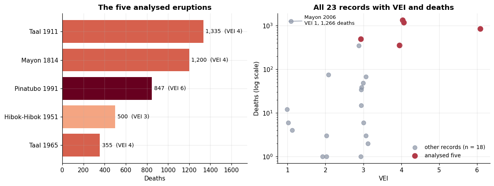
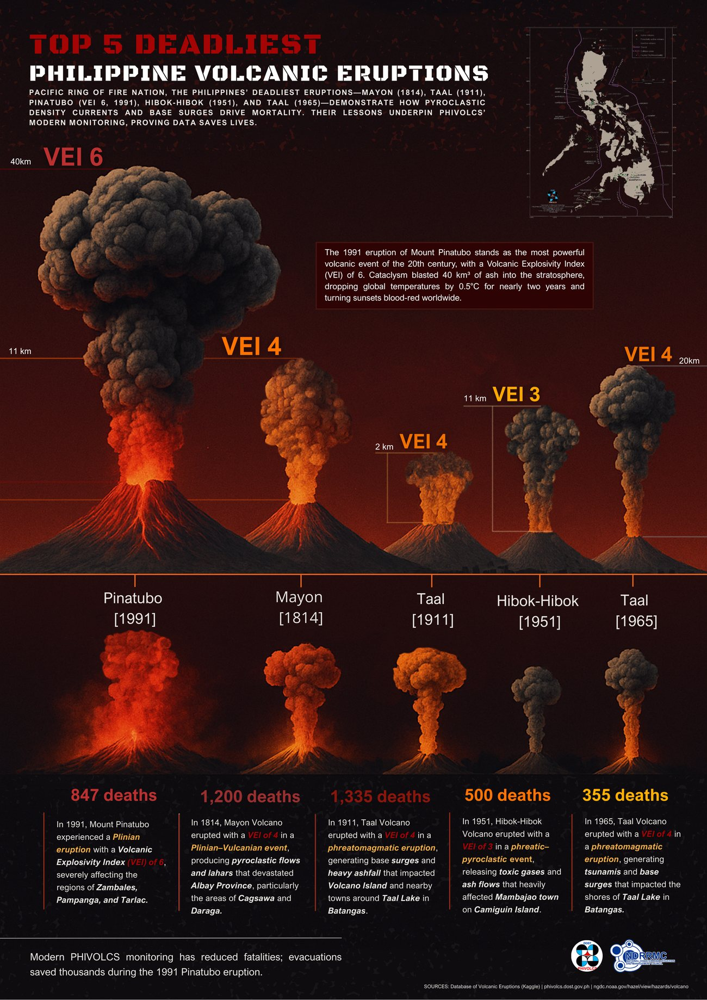

Philippine Volcanic Eruptions: Does Explosivity Predict Deaths?#
Type |
Course portfolio activity (Portfolio 4): exploratory analysis + infographic |
Domain |
Natural hazards · Disaster risk · Data storytelling |
Tools |
R ( |
Date |
April 2025 |
Repository |
[GitHub repo link] |
TL;DR: Using historical eruption records for the Philippines, this analysis compares the Volcanic Explosivity Index (VEI) with death toll for the five highest-VEI eruptions that have recorded deaths. The link is weak (r = 0.19): how explosive an eruption is does not determine how many people die. Location, secondary hazards (lahars, base surges), timing, and preparedness matter more.
eruption records in the source CSV
records with both VEI and deaths reported
eruptions analysed in depth
VEI vs. deaths in the analysed set
1. Problem Statement#
VEI is a standard measure of eruption magnitude; deaths measure human consequence. Do more explosive eruptions necessarily kill more people? Answering this matters for risk communication: if explosivity alone does not predict mortality, monitoring and evacuation planning should focus on exposure and response.
Objectives
Build a clean analysis table from a raw historical eruption dataset.
Quantify the VEI–deaths relationship and report it honestly given the tiny sample.
Explain why the numbers behave this way using hazard type, population exposure, and timing.
Communicate the story in a single infographic.
2. Data & Storage#
Item |
Details |
|---|---|
Sources |
Database of Volcanic Eruptions (Kaggle), NOAA/NGDC volcano records, and PHIVOLCS references |
Format |
Flat CSV ( |
Size |
44 rows × 18 columns |
Key fields |
|
Outputs |
R Markdown report (PDF), infographic PNG, and the CSV kept in the repository |
Loading the CSV and profiling missing values (replicated here in Python from the same file):
import pandas as pd
df = pd.read_csv("../data/Volcano-Philippines.csv")
print(f"{df.shape[0]} rows x {df.shape[1]} columns")
missing = df.isna().sum().rename("missing").to_frame()
missing["% missing"] = (missing["missing"] / len(df) * 100).round(1)
missing[missing["missing"] > 0].sort_values("missing", ascending=False)
44 rows x 18 columns
| missing | % missing | |
|---|---|---|
| Total Missing | 43 | 97.7 |
| Damage ($Mil) | 42 | 95.5 |
| Houses Destroyed | 41 | 93.2 |
| Total Injuries | 39 | 88.6 |
| Deaths | 16 | 36.4 |
| Agent | 15 | 34.1 |
| Day | 6 | 13.6 |
| Death Description | 5 | 11.4 |
| VEI | 5 | 11.4 |
| Month | 3 | 6.8 |
Most impact columns are too sparse to use (damage, houses destroyed, missing persons, and injuries are each
88% empty), and 16 records have no death count. That is why the analysis centres on VEI and Deaths.
3. Preprocessing#
Step |
Detail |
|---|---|
Rename |
|
Handle missing values |
|
Rank |
Sort by VEI (descending), then by deaths (descending) |
Select |
Take the top five rows as the focus set |
Summarise |
Correlation of VEI with deaths ( |
clean = df.rename(columns={"Name": "Volcano"}).dropna(subset=["Deaths", "VEI"])
ranked = clean.sort_values(["VEI", "Deaths"], ascending=[False, False])
top5 = ranked.head(5)[["Year", "Volcano", "Location", "VEI", "Deaths"]].reset_index(drop=True)
top5["VEI"] = top5["VEI"].astype(int)
top5["Deaths"] = top5["Deaths"].astype(int)
print(f"Records kept after dropping missing VEI/Deaths: {len(clean)} of {len(df)}")
top5
Records kept after dropping missing VEI/Deaths: 23 of 44
| Year | Volcano | Location | VEI | Deaths | |
|---|---|---|---|---|---|
| 0 | 1991 | Pinatubo | Luzon-Philippines | 6 | 847 |
| 1 | 1911 | Taal | Luzon-Philippines | 4 | 1335 |
| 2 | 1814 | Mayon | Luzon-Philippines | 4 | 1200 |
| 3 | 1965 | Taal | Luzon-Philippines | 4 | 355 |
| 4 | 1951 | Hibok-Hibok | Mindanao-Philippines | 3 | 500 |
4. Method#
Exploratory analysis: bar chart of deaths per eruption, coloured by VEI.
Correlation: Pearson r between VEI and deaths for the analysed set.
Contextual reading: each eruption is interpreted with hazard type, affected area, and timing (from the volcanology literature and PHIVOLCS/NGDC references, not derived from the CSV).
Communication: the findings are condensed into a single infographic.

5. Results#


Fig. 3 Infographic: VEI, eruption type, and death toll for Pinatubo (1991), Mayon (1814), Taal (1911), Hibok-Hibok (1951), and Taal (1965).#
Key findings
VEI alone does not predict mortality. The correlation is weak (r = 0.19, r² ≈ 0.035), so explosivity explains only a few percent of the variation in deaths. Hibok-Hibok (VEI 3, 500 deaths) killed more people than Taal 1965 (VEI 4, 355 deaths).
Secondary hazards and exposure drive casualties. From the report’s context: lahars caused roughly 60% of Pinatubo’s deaths, Taal 1911 affected an estimated 500,000 people within 15 km, and Mayon 1814 struck at night, limiting evacuation.
Preparedness saves lives. The 1991 Pinatubo eruption was the century’s largest (VEI 6) yet caused fewer deaths than two VEI 4 events (Taal 1911 and Mayon 1814), and modern PHIVOLCS monitoring and evacuations are credited with saving thousands.
How sensitive is r to which eruptions are chosen?
by_deaths = clean.sort_values("Deaths", ascending=False).head(5)
sets = [
("As analysed: top 5 by VEI (ties by deaths)", ranked.head(5)),
("Top 5 ranked by deaths instead", by_deaths),
("All records with both values", clean),
]
pd.DataFrame([{"selection": name, "n": len(d), "r (VEI, Deaths)": round(d["VEI"].corr(d["Deaths"]), 2)}
for name, d in sets])
| selection | n | r (VEI, Deaths) | |
|---|---|---|---|
| 0 | As analysed: top 5 by VEI (ties by deaths) | 5 | 0.19 |
| 1 | Top 5 ranked by deaths instead | 5 | -0.21 |
| 2 | All records with both values | 23 | 0.38 |
The conclusion (VEI is at best a weak-to-moderate predictor of deaths) holds across all three selections, but the exact number moves from −0.21 to 0.38, which is expected with so few points.
6. Data Science Concepts Demonstrated#
Concept |
Where it appears |
|---|---|
Data cleaning |
Renaming, profiling missingness, listwise deletion on the two analysis variables |
Variable selection |
Choosing an intensity measure (VEI) and a consequence measure (deaths) and justifying both |
Correlation & effect size |
Pearson r and r² (variance explained) |
Small-sample caution |
Explicit statement that five points are illustrative, not conclusive |
Confounding / lurking variables |
Population exposure, hazard type, timing, preparedness |
Data visualisation |
Bar chart with VEI as fill, correlation plot, and infographic design |
Communicating uncertainty |
Notes on limits of the dataset and inference |
Reproducible reporting |
R Markdown → PDF with code, tables, and figures together |
7. Limitations & Next Steps#
Selection rule and labelling. The R code ranks by VEI (ties by deaths), so the set is the five highest-VEI eruptions with recorded deaths, not the five deadliest. Ranking by deaths instead brings in Mayon 2006 (VEI 1, 1,266 deaths). Either rename the set or re-rank, and state the rule on the infographic.
Selecting on VEI restricts its range and can mask the relationship; using all 23 records is more defensible.
Missing data is not random. Sixteen eruptions have no death count; unrecorded, zero, and unknown are different things. Dropping them biases the sample toward well-documented, deadlier events.
Small n and no uncertainty interval. Add a bootstrap confidence interval for r (see the coffee-income project) and a rank-based measure (Spearman).
Model the drivers. Add population within 15 km, eruption type/agent, and time of day, then fit a count model (e.g. Poisson or negative binomial) for deaths.
Historical bias. Older events are reported differently from modern ones; include era as a variable.
Interactive map. Plot eruptions by location and VEI with population-exposure layers.